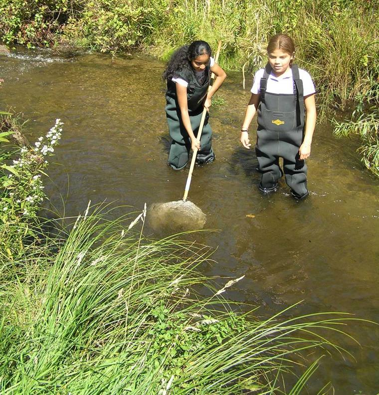

GRPS EXTENDED DAY · 2026–27
More opportunities for scholars.
Clear steps for the people making them happen.
Schools know their scholars, partners bring expertise, and GRPS provides the resources and guardrails. Start with your school, or pick the path that fits your work.

Choose your path
Principal / school leaderBuild the right program for my scholarsSchool pathway → Community partner / vendorWork successfully with GRPSChecklist & contacts → Office of Extended LearningSee the whole portfolioDistrict view →THE EXTENDED DAY JOURNEY